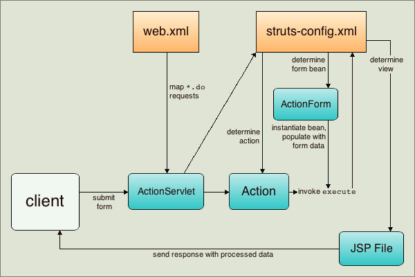

Apache NetBeans
Apache NetBeansJust released!
Introdução ao Struts Web Framework
| This tutorial needs a review. You can open a JIRA issue, or edit it in GitHub following these contribution guidelines. |
Este documento oferece os conceitos básicos sobre o uso do NetBeans IDE no desenvolvimento de aplicações Web usando o Struts Web Framework. O Struts é um framework de código aberto que amplia a API do Servlet Java e implanta uma arquitetura MVC ( Modelo, View, Controlador ). Permite criar aplicações Web manuteníveis, extensíveis e flexíveis baseadas em tecnologias padrão, como páginas JSP, JavaBeans, pacotes de recursos e XML.
Este tutorial ensina como construir uma aplicação MVC simples que exibe uma página de log-in e retorna uma página de sucesso ao enviar dados que são aprovados por validação. Você conhecerá várias funcionalidades básicas oferecidas pelo Struts e também como elas são implementadas usando o IDE. Especificamente, você usará as tags Struts em páginas JSP, manterá os dados do usuário com um Bean ActionForm do Struts e implementará a lógica de encaminhamento utilizando um objeto Action do Struts. Também será mostrado como implementar validação simples à aplicação, incluindo a configuração de mensagens de advertência para tentativas de log-in com falha.
Para obter uma introdução mais detalhada sobre o Struts, consulte How does Struts work? no site oficial do Struts. Utilize também a Pesquisa Javadoc por Índice do IDE (Ajuda > Pesquisa Javadoc por Índice) para ver a API do Struts Framework, que está encapsulada com as bibliotecas do Struts.

Figure 1. O conteúdo desta página se aplica ao NetBeans IDE 7.2, 7.3, 7.4 e 8.0
Para concluir este tutorial, você precisa dos seguintes recursos e softwares.
| Software ou Recurso | Versão Necessária |
|---|---|
Java EE 7.2, 7.3, 7.4, 8.0 |
|
7 ou 8 |
|
GlassFish Server ou Contêiner do servlet Tomcat |
Open Source Edition 3.x ou 4.0 _ _ versão 7.x ou 8.x |
Observações:
-
A instalação Java permite que você instale opcionalmente o GlassFish Server e o contêiner do servlet Apache Tomcat. Você deve instalar um deles (ou registrar outro servidor no IDE) para poder trabalhar neste tutorial.
-
Se você precisar comparar seu projeto com uma solução que funciona, faça download da aplicação de amostra.
Visão Geral da Aplicação
Quando você usa o Struts, o framework oferece um servlet controlador, ActionServlet, definido nas bibliotecas do Struts que estão incluídas no IDE e que está registrado automaticamente no descritor de implantação web.xml conforme ilustrado abaixo. O servlet controlador utiliza o arquivo struts-config.xml para mapear as solicitações de entrada para os objetos Action do Struts e para criar instâncias de quaisquer objetos ActionForm associados à ação a fim de armazenar temporariamente dados do form. O objeto Action processa as solicitações usando o método execute juntamente com os dados armazenados no Bean de form. Quando o objeto Action processa a solicitação, ele armazena os novos dados (isto é, no Bean do form ou em outro Bean de resultado) e encaminha os resultados para a view adequada.

Figure 2. Fluxo de trabalho do Struts
O desenvolvimento de uma aplicação do Struts é semelhante ao desenvolvimento de qualquer outro tipo de aplicação da Web no NetBeans IDE. No entanto, o seu kit de ferramentas de desenvolvimento da Web estará mais completo se você aproveitar o suporte a Struts oferecido pelo IDE. Por exemplo, você usa os modelos no IDE para criar objetos Action do Struts e Beans ActionForm. Durante a criação, o IDE registra automaticamente essas classes no arquivo struts-config.xml e permite ampliar este arquivo facilmente usando os itens de menu exibidos ao clicar com o botão direito do mouse no Editor de Código-Fonte. Como muitas aplicações da Web utilizam páginas JSP da view, o Struts também oferece bibliotecas de tags personalizadas que facilitam a interação com forms HTML. No Editor de Código-Fonte do IDE, você pode chamar o suporte à funcionalidade autocompletar código e a Javadoc, que irá ajudá-lo a trabalhar de forma eficiente com essas bibliotecas.
As etapas a seguir demonstram como criar um form simples que coleta dados do usuário, realiza validação simples e libera os dados em uma página de sucesso.
Configurando uma Aplicação do Struts
No IDE, uma aplicação do Struts nada mais é que uma aplicação Web normal acompanhado por arquivos de configuração e bibliotecas do Struts. Você cria uma aplicação do Struts da mesma forma que cria qualquer outra aplicação Web no IDE - usando o assistente de Nova Aplicação Web e indicando, na etapa adicional, que você quer que os arquivos de configuração e as bibliotecas do Struts sejam incluídas na aplicação.
-
Escolha Arquivo > Novo Projeto (Ctrl-Shift-N; ⌘-Shift-N no Mac) no menu principal. Selecione Java Web na lista de Categorias e, em seguida, selecione Aplicação Web na lista de Projetos. Clique em Próximo.
-
No painel Nome e Localização, digite
MyStrutsAppno Nome do Projeto e clique em Próximo. -
No painel Servidor e Definições, selecione o servidor no qual deseja implantar a aplicação. Somente os servidores registrados com o IDE serão listados. (Para registrar um servidor, clique em Adicionar ao lado da lista drop-down Servidor.) Observe também que o Caminho de Contexto para a aplicação implantada será
/MyStrutsApp. Clique em Próximo. -
Selecione Struts no painel Frameworks. image::images/new-project-wizard.png[title="A opção Struts é exibida no painel Frameworks do assistente de Nova Aplicação Web"]
Para a finalidade deste tutorial, não altere nenhum valor de configuração na região inferior deste painel. O assistente exibe as seguintes opções de configuração.
-
Nome do Servlet de Ação: nome do servlet de ação do Struts usado na aplicação. O descritor de implantação
web.xmlcontém uma entrada para o servlet de ação e especifica os parâmetros adequados específicos do Struts, tais como o caminho para a classe do servlet na biblioteca do Struts e para o arquivo de configuraçãostruts-config.xmlna aplicação. -
Padrão do URL da Ação: especifica os padrões das solicitações de entrada que são mapeadas para o controlador da ação do Struts. Isso gera uma entrada de mapeamento no descritor de implantação. Por default, somente o padrão
*.doé mapeado. -
Recurso da Aplicação: permite especificar o pacote de recursos que será usado no arquivo
struts-config.xmlpara a localização de mensagens. Por default, écom.myapp.struts.ApplicationResource. -
Adicionar TLDs do Struts: permite gerar descritores de bibliotecas de tags para as bibliotecas de tags do Struts. Um descritor de biblioteca de tags é um documento XML que contém informações adicionais sobre toda a biblioteca de tags, bem como sobre cada tag individual. Em geral, isso não é necessário porque é possível consultar URIs on-line em vez dos arquivos TLD locais.
-
Clique em Finalizar. O IDE criará a pasta do projeto no sistema de arquivos. Assim como em qualquer aplicação Web do IDE, a pasta do projeto contém todos os seus códigos-fontes e os metadados do projeto do IDE, como o script de construção do Ant. No entanto, sua aplicação Web tem, além disso, todas as bibliotecas do Struts no seu classpath. Tais bibliotecas não estão somente no classpath da aplicação, mas também estão incluídas no projeto e serão encapsuladas com ele posteriormente quando este for construído.
-
O projeto será aberto no IDE. A janela Projetos é o ponto de entrada principal para os códigos-fonte do projeto. Ela mostra uma view lógica do conteúdo importante do projeto. Por exemplo, ao expandir diversos nós no novo projeto, ela será exibida da seguinte maneira:

Figure 3. A janela Projetos exibe o projeto MyStrutsApp
*Observação: *Utilize a janela Arquivos (Janela > Arquivos) para ver todo o conteúdo do projeto em uma view baseada em diretórios.
Os arquivos de configuração específicos do Struts, bem como o descritor de implantação da aplicação, são colocados apropriadamente na pasta Arquivos de Configuração. Abra o descritor de implantação (clique duas vezes no nó do arquivo web.xml para que seja exibido no Editor de Código-Fonte). Para lidar com o processamento de Struts, é fornecido um mapeamento para o servlet controlador do Struts.
<servlet>
<servlet-name>action</servlet-name>
<servlet-class>org.apache.struts.action.ActionServlet</servlet-class>
<init-param>
<param-name>config</param-name>
<param-value>/WEB-INF/struts-config.xml</param-value>
</init-param>
<init-param>
<param-name>debug</param-name>
<param-value>2</param-value>
</init-param>
<init-param>
<param-name>detail</param-name>
<param-value>2</param-value>
</init-param>
<load-on-startup>2</load-on-startup>
</servlet>
<servlet-mapping>
<servlet-name>action</servlet-name>
<url-pattern>*.do</url-pattern>
</servlet-mapping>Acima, o servlet controlador do Struts é denominado action e é definido na biblioteca do Struts (org.apache.struts.action.ActionServlet). Está definido para cuidar de todas as solicitações que estejam de acordo com o mapeamento *.do. Além disso, os parâmetros de inicialização do servlet são especificados usando o arquivo struts-config.xml, que também está na pasta WEB-INF.
Criando Páginas JSP
Comece criando duas páginas JSP para a aplicação. A primeira exibe um form. A segunda é a view retornada quando o log-in é bem-sucedido.
Criando uma Página de Log-in
-
Clique com o botão direito do mouse no nó do projeto
MyStrutsApp, selecione Nova > JSP e nomeie o novo arquivo comologin. Clique em Finalizar. O arquivologin.jspserá aberto no Editor de Código-Fonte. -
No Editor de Código-Fonte, altere o conteúdo de ambas as tags
<title>e<h1>(ou das tags<h2>, dependendo da versão do IDE que estiver usando) paraForm de Log-in. -
Adicione as duas diretivas de taglib a seguir na parte superior do arquivo:
<%@ taglib uri="http://struts.apache.org/tags-bean" prefix="bean" %>
<%@ taglib uri="http://struts.apache.org/tags-html" prefix="html" %>Muitos aplicações Web utilizam páginas JSP para views no paradigma MVC. Por essa razão, o Struts oferece bibliotecas de tags personalizadas que facilitam a interação com forms HTML. Isso pode ser aplicado facilmente a um arquivo JSP usando o suporte à funcionalidade autocompletar código do IDE. Quando você digita no Editor de Código-Fonte, o IDE oferece a funcionalidade autocompletar código para tags do Struts, bem como o Javadoc do Struts. Você também pode chamar autocompletar código manualmente, pressionando Ctrl-Space:

Figure 4. As funcionalidades autocompletar código e Javadoc são fornecidas para tags do Struts
O bean taglib fornecerá inúmeras tags, úteis ao associar um bean de form (isto é, um Bean ActionForm) aos dados coletados do form. O html taglib oferece uma interface entre a view e os outros componentes necessários para a aplicação Web. Abaixo, por exemplo, você substitui as tags html form comuns pelas tags <html:form> do Struts. Uma vantagem dessa substituição é que ela faz com que o servidor localize ou crie um objeto do Bean que corresponda ao valor fornecido pelo elemento action de html:form.
-
Abaixo das tags
<h1>(ou<h2>), adicione o seguinte:
<html:form action="/login">
<html:submit value="Login" />
</html:form>Sempre que terminar de digitar no Editor de Código-Fonte, você pode arrumar o código clicando com o botão direito do mouse e selecionando Formatar (Alt-Shift-F).
-
Na Paleta (Janela > Paleta), à direita do IDE, arraste um item Tabela da categoria HTML para um local logo acima da linha
<html:submit value="Log-in" />. A caixa de diálogo Inserir Tabela será exibida. Defina as linhas como3, as colunas como2e deixe todas as outras definições como0. Mais adiante neste tutorial, você anexará uma folha de estilo para afetar a view da tabela. image::images/insert-table.png[title="A Paleta fornece caixas de diálogos para facilitar o uso de modelos de código"] Clique em OK e, opcionalmente, reformate o código (Alt-Shift-F). O form emlogin.jspestará da seguinte forma:
<html:form action="/login">
<table border="0">
<thead>
<tr>
<th></th>
<th></th>
</tr>
</thead>
<tbody>
<tr>
<td></td>
<td></td>
</tr>
<tr>
<td></td>
<td></td>
</tr>
<tr>
<td></td>
<td></td>
</tr>
</tbody>
</table>
<html:submit value="Login" />
</html:form>*Observação: *Você pode deletar com segurança a linha <thead> da tabela, pois ela não será utilizada neste tutorial.
-
Na primeira linha da tabela, insira o seguinte (alterações em negrito):
<tr>
<td>*Enter your name:*</td>
<td>*<html:text property="name" />*</td>
</tr>-
Na segunda linha da tabela, digite o seguinte (alterações em negrito):
<tr>
<td>*Enter your email:*</td>
<td>*<html:text property="email" />*</td>
</tr>O elemento html:text permite combinar os campos de entrada do form com as propriedades no Bean de form que serão criadas na próxima etapa. Assim, por exemplo, o valor de property deve corresponder a um campo declarado no Bean de form associado a este form.
8. Mova o elemento <html:submit value="Log-in" /> para a segunda coluna da terceira linha da tabela para que a terceira linha da tabela apareça da seguinte forma (alterações em negrito):
<tr>
<td></td>
<td>*<html:submit value="Login" />*</td>
</tr>Neste estágio, seu form de log-in terá a aparência seguinte:
<html:form action="/login">
<table border="0">
<tbody>
<tr>
<td>Enter your name:</td>
<td><html:text property="name" /></td>
</tr>
<tr>
<td>Enter your email:</td>
<td><html:text property="email" /></td>
</tr>
<tr>
<td></td>
<td><html:submit value="Login" /></td>
</tr>
</tbody>
</table>
</html:form>Criando uma Página de Sucesso
-
Clique com o botão direito do mouse no nó do projeto
MyStrutsApp, selecione Nova > JSP e nomeie o novo arquivo desuccess. No campo Pasta, clique no botão Procurar adjacente e selecioneWEB-INFna caixa de diálogo exibida. Clique em Selecionar Pasta para inserir WEB-INF no campo Pasta. Nenhum arquivo contido na pasta WEB-INF pode ser acessado diretamente pelas solicitações do cliente. Para o que o arquivosuccess.jspseja exibido corretamente, ele deve conter dados processados. Clique em Finalizar. -
No Editor de Código-Fonte, altere o conteúdo da página recém-criada para:
<head>
<meta http-equiv="Content-Type" content="text/html; charset=UTF-8">
<title>Login Success</title>
</head>
<body>
<h1>Congratulations!</h1>
<p>You have successfully logged in.</p>
<p>Your name is: .</p>
<p>Your email address is: .</p>
</body>-
Adicione uma diretiva bean taglib na parte superior do arquivo:
<%@ taglib uri="http://struts.apache.org/tags-bean" prefix="bean" %>-
Adicione as tags
<bean:write>a seguir (alterações em negrito):
<p>Your name is: *<bean:write name="LoginForm" property="name" />*.</p>
<p>Your email address is: *<bean:write name="LoginForm" property="email" />*.</p>Ao utilizar as tags <bean:write>, você pode utilizar o bean taglib para localizar o bean ActionForm que será criado, e exibir os dados do usuário salvos para name e email.
Criando um Bean ActionForm
Um Bean ActionForm do Struts é usado para conservar os dados entre as solicitações. Por exemplo, se um usuário enviar um form, os dados serão armazenados temporariamente no Bean de form para que possam ser reexibidos na página de form (se os dados estiverem em um formato inválido ou se o log-in falhar) ou exibidos em uma página de log-in bem-sucedido (se os dados forem aprovados pela validação).
-
Clique com o botão direito do mouse no nó do projeto
MySturtsAppe selecione Novo > Outro. Em Categorias, selecione Struts e, em Tipos de Arquivos, selecione Bean ActionForm do Struts. Clique em Próximo. -
Digite
LoginFormem Nome da Classe. Em seguida, selecionecom.myapp.strutsna lista drop-down Pacote e clique em Finalizar.
O IDE criará o bean LoginForm e o abrirá no Editor de Código-Fonte. Por default, o IDE fornecerá uma String denominada name e um int denominado number. Ambos os campos possuem métodos acessadores definidos. O IDE também adicionará uma declaração do Bean ao arquivo struts-config.xml. Se você abrir o arquivo struts-config.xml no Editor de Código-Fonte, você verá a seguinte declaração adicionada pelo assistente:
<form-beans>
*<form-bean name="LoginForm" type="com.myapp.struts.LoginForm" />*
</form-beans>O IDE oferece suporte à navegação no arquivo struts-config.xml. Mantenha pressionada a tecla Ctrl e coloque o mouse sobre o nome de classe totalmente qualificado do Bean LoginForm. O nome se torna um link, permitindo que você vá diretamente para a classe no Editor de Código-Fonte:

Figure 5. O suporte à navegação é fornecido em struts-config.xml
-
No Bean
LoginFormno Editor de Código-Fonte, crie campos e métodos acessadores que correspondam aos campos de entrada de textonameeemailque você criou no arquivologin.jsp. Como onamejá foi criado no esqueleto deLoginForm, será necessário implementar somente oemail.
Adicione a declaração a seguir abaixo de name (alterações em negrito):
private String name;
*private String email;*Para criar métodos acessadores, coloque o cursor sobre email e pressione Alt-Insert.

Figure 6. O menu Inserir Código é exibido ao pressionar Ctrl-I no Editor de Código-Fonte
Selecione Getter e Setter e, na caixa de diálogo exibida, selecione email: String e clique em Gerar. Os métodos acessadores serão gerados para o campo email.
*Observação: *Você pode deletar métodos acessadores e a declaração de number, já que ele não será utilizado neste tutorial.
Criando uma Classe Action
A classe Action contém a lógica de negócios da aplicação. Quando os dados do form são recebidos, é o método execute de um objeto Action que processa os dados e determina para qual view encaminhar os dados processados. A classe Action está integrada ao Struts Framework; por esta razão, o NetBeans IDE fornece a você um assistente.
-
Na janela Projetos, clique com o botão direito do mouse no nó do projeto
MyStrutsAppe selecione Novo > Outro. Na categoria Struts, selecione Ação do Struts e clique em Próximo. -
No painel Nome e Localização, altere o nome para
LoginAction. -
Selecione
com.myapp.strutsna lista drop-down Pacote. -
Digite
/Loginno Caminho da Ação. Este valor deve corresponder ao valor definido para o atributoactiondas tags<html:form>nologin.jsp. Verifique se as definições aparecem conforme indicado na captura de tela abaixo e clique em Próximo. image::images/new-struts-action.png[title="Assistente de Nova Ação do Struts"] -
Na terceira etapa do assistente, você pode associar a classe
Actiona um Bean de form. Observe que o BeanLoginFormcriado anteriormente está listado como uma opção de Nome do Bean ActionForm. Faça os seguintes ajustes no painel:-
Delete a barra inclinada do campo Recurso de Entrada
-
Defina Escopo para Solicitação (Sessão é a definição de escopo default no Struts.)
-
Desmarque a opção Validar Bean ActionForm Clique em Finalizar. A classe
LoginActionserá gerada e o arquivo será aberto no Editor de Código-Fonte. Observe também que a entradaactionseguinte será adicionada ao arquivostruts-config.xml:
-
<action-mappings>
*<action name="LoginForm" path="/login" scope="request" type="com.myapp.struts.LoginAction" validate="false"/>*
<action path="/Welcome" forward="/welcomeStruts.jsp"/>
</action-mappings>Os atributos name e scope se aplicam ao Bean de form associado à ação. Especificamente, quando uma solicitação de entrada corresponde a /log-in, o framework do Struts cria automaticamente instâncias de um objeto LoginForm e o preenche com os dados do form enviados na solicitação. O valor default de validate é definido como true. Isso diz ao framework para chamar o método validate do Bean de form. No entanto, esta opção foi desmarcada no assistente porque você escreverá o código manualmente para a validação simples na próxima etapa, a qual não requer o método validate.
Implementando Validação
No Editor de Código-Fonte, procure a classe LoginAction e veja o método execute:
public ActionForward execute(ActionMapping mapping, ActionForm form,
HttpServletRequest request, HttpServletResponse response)
throws Exception {
return mapping.findForward(SUCCESS);
}Observe a definição de SUCCESS, listada abaixo da classe de declaração LoginAction:
private final static String SUCCESS = "success";Atualmente, o método mapping.findForward está definido para enviar incondicionalmente qualquer solicitação a uma view de saída denominada success. Na verdade, isso não é o desejado. Você quer primeiro realizar algum tipo de validação dos dados de entrada para determinar se será enviada a view success ou outra exibição.
Acessando Dados do Bean e Preparando uma Condição de Encaminhamento
-
Insira o seguinte código no corpo do método
execute:
// extract user data
LoginForm formBean = (LoginForm)form;
String name = formBean.getName();
String email = formBean.getEmail();Para usar os dados de entrada do form, é necessário tomar o argumento ActionForm de execute e lançá-lo como LoginForm, e ,em seguida, aplicar os métodos getter criados anteriormente.
2. Digite o seguinte na cláusula condicional para realizar a validação dos dados de entrada:
// perform validation
if ((name == null) || // name parameter does not exist
email == null || // email parameter does not exist
name.equals("") || // name parameter is empty
email.indexOf("@") == -1) { // email lacks '@'
return mapping.findForward(FAILURE);
}Neste estágio, o método execute deverá ter a seguinte aparência:
public ActionForward execute(ActionMapping mapping, ActionForm form,
HttpServletRequest request, HttpServletResponse response)
throws Exception {
// extract user data
LoginForm formBean = (LoginForm) form;
String name = formBean.getName();
String email = formBean.getEmail();
// perform validation
if ((name == null) || // name parameter does not exist
email == null || // email parameter does not exist
name.equals("") || // name parameter is empty
email.indexOf("@") == -1) { // email lacks '@'
return mapping.findForward(FAILURE);
}
return mapping.findForward(SUCCESS);
}-
Adicione a declaração
FAILUREna classeLoginAction(alterações em negrito):
private final static String SUCCESS = "success";
*private final static String FAILURE = "failure";*Quando você usa a lógica acima, o método execute envia a solicitação para a view success se o usuário fornecer uma entrada para os campos name e email e se o e-mail informado contiver o símbolo '@'. Do contrário, será enviada a view failure. Conforme demonstrado abaixo em Adicionando Entradas forward ao struts-config.xml, você poderá definir a view failure para voltar à página do form para que o usuário possa inserir os dados no formato correto.
Configurando uma Mensagem de Erro
Se o form de log-in for retornado, recomenda-se informar o usuário de que a validação falhou. Você pode fazer isso adicionando um campo error no Bean de form e uma tag <bean:write> adequada ao form no login.jsp. E definindo finalmente, no objeto Action, a mensagem de erro que será exibida caso a view failure seja escolhida.
-
Abra
LoginForme adicione um campoerrorà classe:
// error message
private String error;-
Adicione um método getter e um método setter para
error, conforme demonstrado acima. -
Modifique o método setter para que apareça da seguinte forma:
public void setError() {
this.error =
"<span style='color:red'>Please provide valid entries for both fields</span>";
}-
Abra
login.jspe faça as seguintes alterações:
<html:form action="/login">
<table border="0">
<tbody>
*<tr>
<td colspan="2">
<bean:write name="LoginForm" property="error" filter="false"/>
&nbsp;</td>
</tr>*
<tr>
<td>Enter your name:</td>
<td><html:text property="name" /></td>
</tr>-
Em
LoginAction, na cláusula condicionalif, adicione uma instrução para definir a mensagem de erro antes de encaminhar a condição defailure(alterações em negrito):
if ((name == null) || // name parameter does not exist
email == null || // email parameter does not exist
name.equals("") || // name parameter is empty
email.indexOf("@") == -1) { // email lacks '@'
*formBean.setError();*
return mapping.findForward(FAILURE);
}A classe LoginAction concluída deverá ter agora a seguinte aparência:
public class LoginAction extends org.apache.struts.action.Action {
private final static String SUCCESS = "success";
private final static String FAILURE = "failure";
public ActionForward execute(ActionMapping mapping, ActionForm form,
HttpServletRequest request, HttpServletResponse response)
throws Exception {
// extract user data
LoginForm formBean = (LoginForm)form;
String name = formBean.getName();
String email = formBean.getEmail();
// perform validation
if ((name == null) || // name parameter does not exist
email == null || // email parameter does not exist
name.equals("") || // name parameter is empty
email.indexOf("@") == -1) { // email lacks '@'
formBean.setError();
return mapping.findForward(FAILURE);
}
return mapping.findForward(SUCCESS);
}
}Adicionando Entradas forward ao struts-config.xml
Para que a aplicação corresponda às páginas JSP com condições de encaminhamento retornadas pelo método execute do LoginAction, será necessário adicionar entradas forward ao arquivo struts-config.xml file.
-
Abra
struts-config.xmlno Editor de Código-Fonte, clique com o botão direito do mouse em qualquer parte da entradaactiondeLoginForme selecione Struts > Adicionar Encaminhamento. image::images/add-forward.png[title="Clique com o botão direito do mouse e selecione Struts > Adicionar Encaminhamento"] -
Na caixa de diálogo Adicionar Encaminhamento, digite
successno Nome de Encaminhamento. Indique o caminho asuccess.jspno campo Arquivo de Recurso (isto é,/WEB-INF/success.jsp). A caixa de diálogo deverá ter a seguinte aparência: image::images/add-forward-dialog.png[title="A caixa de diálogo Adicionar Encaminhamento cria uma entrada de encaminhamento no arquivo struts-config.xml"] Clique em Adicionar. Observe que a entradaforwarda seguir foi adicionada astruts-config.xml(alterações em negrito):
<action name="LoginForm" path="/login" scope="request" type="com.myapp.struts.LoginAction" validate="false">
*<forward name="success" path="/WEB-INF/success.jsp"/>*
</action>-
Execute a mesma ação para adicionar uma entrada de encaminhamento a
failure. Defina o caminho do Arquivo de Recurso como/login.jsp. A entradaforwarda seguir será adicionada astruts-config.xml(alterações em negrito):
<forward name="success" path="/WEB-INF/success.jsp"/>
*<forward name="failure" path="/login.jsp"/>*Configurando e Executando a Aplicação
O IDE utiliza um script de construção do Ant para construir e executar as aplicações Web. O IDE gerou o script de construção quando você criou o projeto, com base nas opções inseridas no assistente de Novo Projeto. Antes de construir e executar a aplicação, você precisa definir o ponto de entrada default da aplicação para login.jsp. Como opção, você também pode adicionar uma folha de estilo simples ao projeto.
Definindo a Página de Boas-Vindas
-
Na janela Projetos, clique duas vezes no descritor de implantação
web.xml. As guias listadas na parte superior do Editor de Código-Fonte oferecem uma interface para o arquivoweb.xml. Clique na guia Páginas. No campo Arquivos de Boas-Vindas, digitelogin.jsp. image::images/welcome-files.png[title="Editor gráfico para o descritor de implantação da aplicação"] Agora clique na guia Código-fonte para exibir o arquivo. Observe quelogin.jspestará listado na entradawelcome-file:
<welcome-file>login.jsp</welcome-file>Anexando uma Folha de Estilo
-
Adicione uma folha de estilo simples ao projeto. Uma forma fácil de executar esta ação é salvando +esta folha de estilo de amostra + no computador. Copie o arquivo (Ctrl-C) e, no IDE, selecione o nó Páginas Web na janela Projetos e pressione Ctrl-V. O arquivo será adicionado ao projeto.
-
Vincule a folha de estilo às páginas JSP adicionando uma referência entre as tags
<head>delogin.jspesuccess.jsp:
<link rel="stylesheet" type="text/css" href="stylesheet.css">Executando a Aplicação
-
Na janela Projetos, clique com o botão direito do mouse no nó do projeto e selecione Executar. O IDE construirá a aplicação Web e o implantará, usando o servidor especificado ao criar o projeto. O browser será aberto e exibirá a página
loginForm.jsp. Digite dados que falharão durante o processo de validação, ou seja, deixe um campo em branco ou insira um endereço de e-mail sem o símbolo '@': image::images/login-form.png[title="O form contém dados que não serão aprovados por validação"]
Quando você clicar em Log-in, a página de form de log-in será reexibida, contendo uma mensagem de erro: image::images/login-form-error.png[title="O form é exibido novamente com a mensagem de erro"]
Tente inserir dados que sejam aprovados na validação. Quando você clicar em Log-in, a página de sucesso será exibida: image::images/success-page.png[title="A página de sucesso é exibida mostrando os dados de entrada"] Envie-nos Seu Feedback
Consulte Também
Aqui termina a Introdução ao Struts Framework no NetBeans IDE. Este documento demonstrou como construir uma aplicação Web MVC simples no NetBeans IDE usando ao Struts Framework, e apresentou-lhe à interface do IDE para desenvolver aplicações Web. Você viu como usar as tags do Struts nas páginas JSP, como armazenar temporariamente os dados do usuário em um Bean ActionForm do Struts e como implementar lógica de encaminhamento usando um objeto Action do Struts. Também será mostrado como implementar validação simples à aplicação, incluindo a configuração de mensagens de advertência para tentativas de log-in com falha.
Para obter tutoriais relacionados, consulte os seguintes recursos:
-
Adicionando Suporte a um Framework da Web Guia geral que descreve como adicionar suporte ao framework da Web para o NetBeans IDE usando o Gerenciador de Plug-ins.
-
Introdução ao Spring Web Framework. Descreve os conceitos básicos do uso do NetBeans IDE para desenvolver aplicações Web que usam o Spring Framework.
-
Introdução ao JavaServer Faces 2.0. Um documento que descreve como conectar um bean gerenciado a páginas Web e como tirar vantagem de modelos de Facelets.